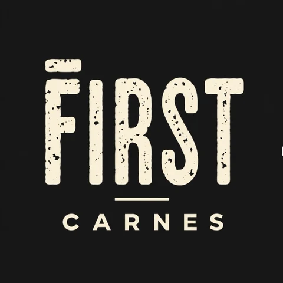

Contenido
Jornada de grabación, edición y publicación de las piezas de las dos cuentas.
First Hamburguesas sale a ganarse un nombre para entrar a la góndola. First Carnes sale a vender online, directo del frigorífico a la casa.

Las dos cuentas de Instagram están recién abiertas. La marca se arma bien desde la primera publicación, sin nada que corregir.
Detrás hay un frigorífico que hoy le vende a empresas. Calidad y precio de origen, sin intermediarios en el medio.
Una marca necesita que la conozcan. La otra necesita vender. Cada una lleva su propio plan.
Que la marca exista y se mueva, para llegar a los supermercados con nombre propio.
Una tienda online que vende cortes envasados al vacío, con el cierre por WhatsApp.
Cuando First se siente con un supermercado, la marca tiene que estar viva: con seguidores, con contenido y con un sitio que la respalde.
La hamburguesa en la parrilla, el origen de la carne, recetas. Lo que hace que alguien frene a mirar.
Campañas para sumar seguidores reales de la zona y que la cuenta tenga movimiento.
La carta de presentación: productos, origen y un canal directo para comercios.
Con todo eso armado, la marca llega a los supermercados con nombre y con gente que la pide.
El desafío de este rubro es que el corte nunca pesa exacto. Alguien pide 2 kg de vacío y la pieza pesa 2,3. La tienda tiene que estar armada para eso desde el principio.
Cada corte se publica por franja, con el precio por kilo a la vista y un total estimado. El cliente sabe desde el principio que el peso final puede moverse un poco.
Combinaciones armadas de antemano con un precio fijo: la del asado del finde, la de la semana. Simplifican la compra, suben el ticket y son las más fáciles de publicitar.
El pedido entra por la tienda y el cobro final se hace por WhatsApp con el peso real de cada pieza, por link de pago o transferencia. Nadie paga de más ni de menos.
"La carne es de peso variable y el precio final se confirma por WhatsApp."
Tu Corte Ya, carnicería online de CABA y GBA, en el total estimado de su carrito. Relevado el 22 de octubre de 2026.
Una carnicería online compra la carne para revenderla. First la tiene de origen. Es un argumento que casi nadie en el rubro puede usar, y es el que va al frente de la tienda y de los anuncios.
La primera compra trae al cliente. La segunda y la tercera son las que hacen rentable la tienda.
Las dos marcas salen del mismo lugar. Por eso grabamos una vez por mes en el frigorífico y en cocina, y de esa jornada sale el material de las dos cuentas.
La jornada de grabación, la fotografía de producto, la edición y la publicación están dentro del fee. Son doce piezas por mes para cada cuenta, entre videos, carruseles e imágenes, y la gestión de las dos cuentas.
Las fotos de los cortes para la tienda salen de la primera jornada.
Esto no nos lo pagan a nosotros. Son servicios y decisiones a nombre de First, que quedan siempre bajo su control.
Las direcciones del sitio y de la tienda. Se registran en NIC Argentina con el CUIT de la empresa y se renuevan cada año. Los configuramos nosotros, pero quedan a nombre de ustedes.
La tienda va en Tiendanube, que se paga por mes y tiene varios planes. Cuál conviene depende del volumen que esperen vender: lo vemos juntos antes de que contraten. Ya incluye el alojamiento, así que no hace falta pagar hosting aparte.
Hasta dónde llegan, qué días reparten, la compra mínima y cómo se cuida la cadena de frío. Lo definen ustedes y nosotros lo dejamos configurado en la tienda y en las campañas.
Jornada de grabación, edición y publicación de las piezas de las dos cuentas.
Armado, seguimiento y ajuste en Meta y en Google. Se corta lo que no rinde y se refuerza lo que sí.
Escribimos los textos de las publicaciones y de los anuncios, con la voz de cada marca.
Un acceso web para ver los números cuando quieran. Se configura con lo que a ustedes les sirva mirar.
Un informe claro de qué se invirtió, qué entró y qué decidimos. Sin planillas para descifrar.
Reunión de revisión para decidir juntos el rumbo, y disponibilidad por WhatsApp en el medio.
E-commerce · alimentos congelados
Venta online de comida congelada, con pedidos por la tienda y por WhatsApp. Gestionamos Meta y Google juntos y en septiembre el retorno combinado de las dos plataformas fue de 10,8 veces lo invertido.
E-commerce · marca nueva
Arrancó de cero: tienda nueva, sin historial y sin audiencia, igual que First. En su mejor semana el retorno llegó a 12,8x y en el tercer mes promedió 8x.
Son dos marcas con dos cuentas cada una, así que el contenido y la publicidad se cotizan por marca. El armado se paga una sola vez. El fee cubre el trabajo de Dilema: lo que se invierte en Meta y en Google va aparte.
El sitio de First Hamburguesas y la tienda de First Carnes, entregados funcionando. Se paga una sola vez: no es un abono. El plan mensual de Tiendanube lo contratan ustedes aparte.
Producción, edición, publicación y gestión de las dos cuentas, en un solo fee. Sin adicionales por jornada de grabación.
Instagram y Facebook de una marca. Seguidores y presencia para Hamburguesas, ventas para Carnes.
Búsquedas de una marca. Comercios que buscan proveedor para Hamburguesas, gente que quiere comprar carne online para Carnes.
Los dos canales de una marca, gestionados juntos. Uno sale a buscar gente nueva y el otro atiende al que ya está buscando.
Meta y Google para First Hamburguesas y para First Carnes, con una sola estrategia para las dos marcas. Tomando todo junto, les bonificamos USD 200.
Una marca que nace de cero necesita tiempo para juntar seguidores, y una tienda nueva necesita historial de pedidos antes de sacar conclusiones. Tres meses es lo mínimo para que las dos tengan algo que mostrar.
Al cierre del tercer mes nos sentamos con los números a la vista y definimos juntos cómo sigue.
Se le paga directo a Meta y a Google y queda a nombre de ustedes. Para First Hamburguesas arrancamos con una inversión mínima: lo justo para sumar seguidores e ir construyendo presencia. Una campaña de marca cuesta mucho menos que una de venta.
Para First Carnes no tiramos un número ahora porque sería adivinar. Lo calculamos juntos con nuestra calculadora de presupuesto, a partir del margen, el ticket promedio y cuánto quieren vender.
Nos dan el visto bueno, registran los dominios y nos pasan los accesos de Instagram y Facebook de las dos marcas.
Contratan el plan de Tiendanube y hacemos la primera jornada de grabación en el frigorífico. Con ese material armamos el sitio, la tienda y las primeras publicaciones.
Con el sitio y la tienda andando y la medición funcionando, arrancan las campañas de las dos marcas.